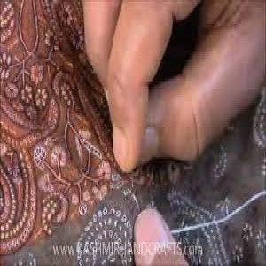
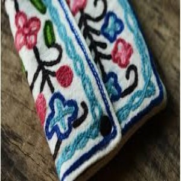
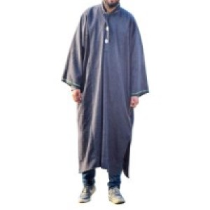

1) Pashmina
i) Pashmina is immensely lightweight, soft, and has three times the insulating value compared to wool.
ii) 3 to 4 Changthangi goats are required to make a shawl of measure 200cm x100cm.
iii) Pashmina shawls are handcrafted. Some shawls are heavily embroidered taking many years to complete.

2) Walnut Woodcarving
i) Walnut woodcarving is believed to be introduced by Sheikh Hamza Makhdoom during the reign of Zainul Abidin in the 15th century.
ii) The wood used for the fine woodcarving is obtained from a walnut tree known as 'Doon Kul' that is cut only once it matures to an age of 300 years.

3) Sozni Embroideries
i) The Islamic saint Shah Hamdan introduced the Sozni embroideries in Kashmir in the 14th century.
ii) Its intricacy can vary from 5 stitches per cm to 500 stitches per cm. 
4) Aari Work
i) Aari work traces its emergence way back to the 12th century, which marked the rule of the Mughal emperors. Floral motifs and traditional designs fascinated the Mughal royals during that period.
ii) Locally, Aari work is also known as Zalakdozi. 
5) Papier Mâché
i) Papier mâché was introduced in Kashmir in the 14th century by the Persian mystic Mir Syed Ali Hamdani.
ii) There are two important aspects of Kashmiri papier mâché- Sakhtsazi and Naqashi. The first step, Sakhtsazi, involves making the foundation of the object with the paper pulp and Naqashi is the final step of painting and decoration.

6) Shahtoosh Shawls
i) It is also a metonym for a type of Kashmir shawl traditionally made of shahtoosh wool
ii) They are warm enough to hatch a pigeon egg and a 2m long shawl is just 160g.
iii) It is softer, lighter, and warmer than Pashmina making it expensive.

We have chosen these crafts of Kashmir as they are masterfully handcrafted and act as a major source of income for many Kashmiri families.
7) Pheran
i) A Pheran made of wool is called a 'loch'.
ii) Pheran was introduced by Mughal emperor Akbar in 1586.
iii) Pheran is unisex but women love to wear the Tilla Pheran. 
We have chosen this attire of Kashmir as it is the traditional clothing for the common people of the region and it holds great historic value